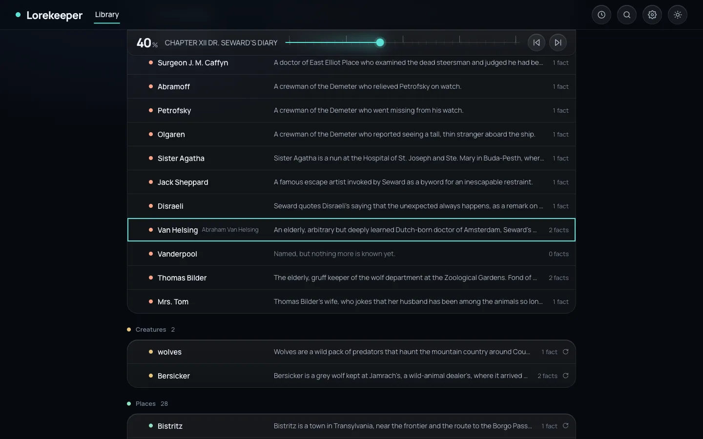
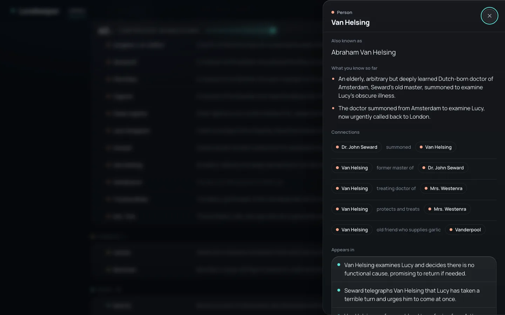
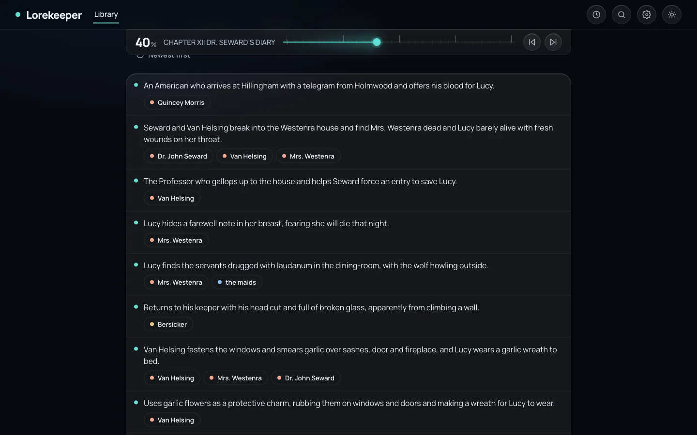
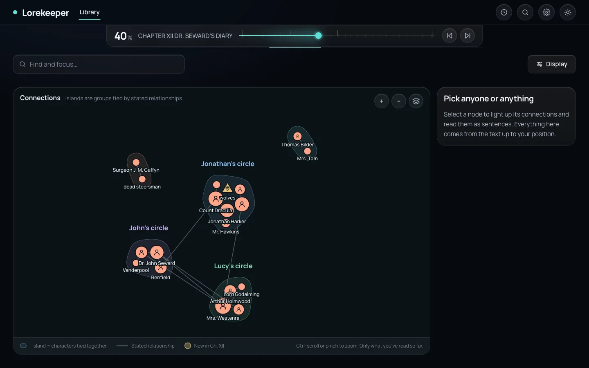
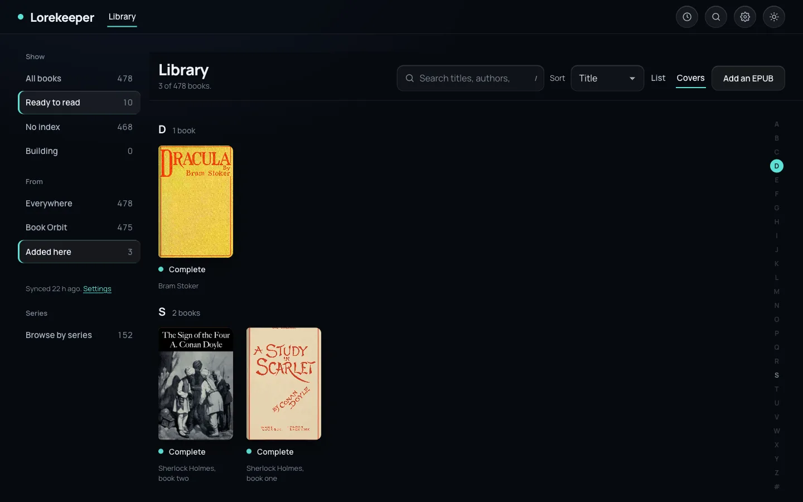
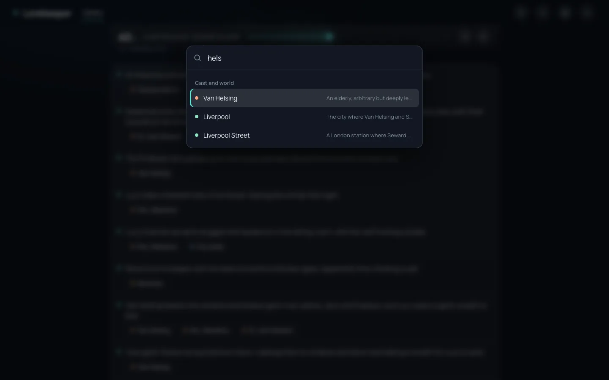
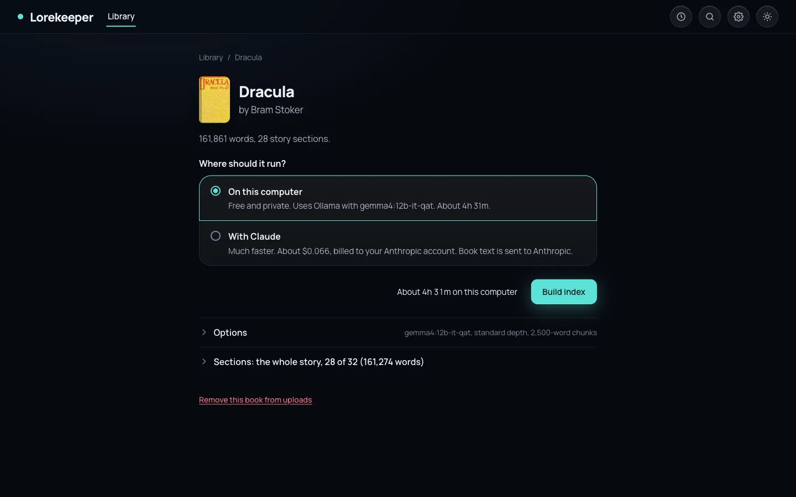
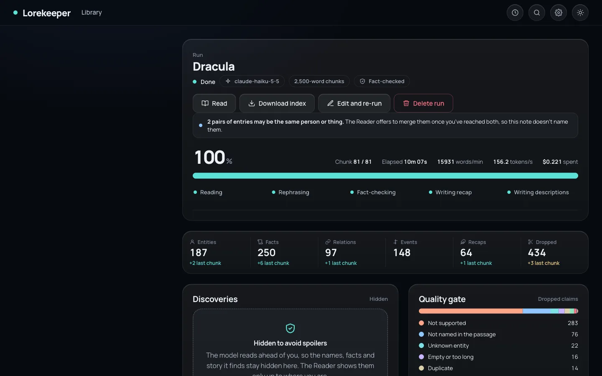

One character, seven books
Entity ids are shared across a series. A character keeps one growing description from book to book, and the Reader merges what you know from the books you've finished with where you are in the current one.
An open standard for spoiler-safe book companions
Lorekeeper builds an index for any EPUB: who's who, what happened, how everyone is connected. Your reader shows it only as far as you've read. Not a name, not a count, not a hint past your page.
Open format and protocol. Runs on your own machine with a local model, or bring your own key: Claude, OpenAI, Gemini and any OpenAI-compatible API. Indexes carry across a whole series.
Bram Stoker. The whole book, indexed by Lorekeeper. Drag to read.
Nothing to recap yet. Move forward to see the story so far.
No one has been named yet.
Everything past the marker stays dark. The page doesn't even know how much is there.
One position control drives the whole companion. Set it to your page and every tab answers as of that page.
A chapter, a percentage, or the position your reading app already knows. The track is lit up to the marker and dark after it, and the counts beneath only count what you can see.

Every character gets a description written from the passages that mention them, rewritten at each chapter end. Facts are listed with the page that states them, in words the book has already used. No hindsight, no "will later".

Events are one sentence each, tagged with everyone involved, newest first. The story-so-far recap at the top of the Chapters tab is stitched from chapter summaries up to your page.

Characters tied by stated relationships form islands, named after their family or the person with the most ties. Moving forward adds people to the map without reshuffling it, and nothing beyond your page is used to place anyone.



A model only proposes. The reference implementation checks every claim against the book and decides where it may be revealed.
The EPUB becomes numbered paragraphs. Front and back matter is left out.
Each paragraph gets a fingerprint of its words, so any edition of the book lines up with the index.
A model reads one chunk at a time and proposes names, facts, events, relationships and a recap. Locally with Ollama, or with the cloud model of your choice.
Every claim is checked against the passage. What the text doesn't say is dropped, and nothing is taken on the model's word. Names must appear in the book before they can be used.
Each surviving fact is tied to the paragraph that states it. A reader shows it only once that paragraph is behind them.
Pick a book, pick where the model runs, press Build. On your own computer it is free and private. With a cloud model on your own key (Claude, OpenAI, Gemini or any OpenAI-compatible API) it is faster and costs cents; with Claude, all of Dracula took ten minutes and 22 cents. The whole story is selected by default; front and back matter never is.

The run monitor shows progress, speed, cost and a quality gate that counts every dropped claim by reason. The names and facts it finds stay hidden until you say you've read the book, because the model reads ahead of you.

Entity ids are shared across a series. A character keeps one growing description from book to book, and the Reader merges what you know from the books you've finished with where you are in the current one.
Linked to a Book Orbit library, the Reader opens at the page your reading app last saved. Lorekeeper only ever reads that position. It never writes one back.
In a book you haven't finished, the synced position is a spoiler line. The slider stops there. Going past it asks first, and one tap brings you back.
"Van Helsing" and "Abraham Van Helsing" are offered as one entry only once you've reached both. Hidden identities are never merged, so a stranger stays a stranger until the book says otherwise.
The index is a JSON file and the gating rule is a short, tested algorithm. A reader app needs no AI and no tokens to use one, and it works offline.
Ask a server what a reader may see
# Find the index for the book in hand
GET /v0/lookup?gutenberg=244
# The gated view at an EPUB CFI from the reading app
GET /v0/indexes/{id}/view
?cfi=epubcfi(/6/22!/4/108/1:0)
&fileHash={sha256}
# Response: entities, events, recaps as of that page,
# plus where the locator landed
{ "locator": { "seq": 36, "basis": "cfi", "exact": true },
"position": { "anchor": "ch1.para05" },
"entities": [ … ], "events": [ … ], "recaps": [ … ] }Read-only, any-origin CORS, optional bearer token. Protocol reference.
One Docker command, or Python 3.11 and uv. Add Ollama to build indexes for free on your own machine, or bring a key (Claude, OpenAI, Gemini and more) to build them faster.
docker compose up -d
# then open http://localhost:8765
# or, without Docker
uv sync
uv run --extra web lorekeeper web